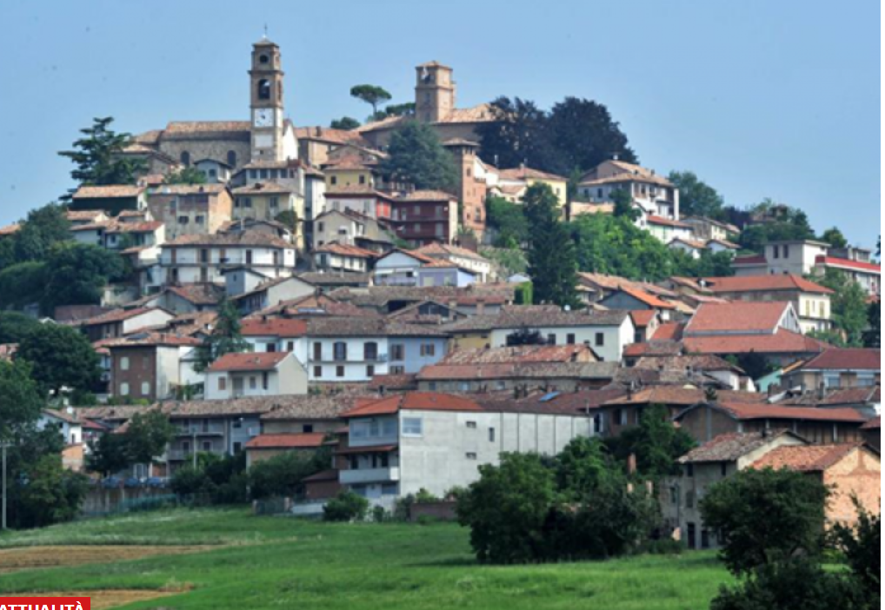

Raduno dei tartufai e apertura della Fiera
Apertura del mercato del tartufo, dei prodotti tipici e degli stand.
4 e 11 ottobre 2026
Due domeniche tra tartufi, sapori,
tradizioni e paesaggi del Monferrato.
Due domeniche per scoprire tartufi, sapori e tradizioni del Monferrato.
Apertura del mercato del tartufo, dei prodotti tipici e degli stand.
Premio “Il Cane d’argento” al miglior piatto e “Premio Pro Loco” al miglior esemplare singolo di Tuber Magnatum Pico.
Raduno C.A.M.E.A. in Piazza Regina Margherita e show a cura dell’Istituto G. Penna con Cinzia Montagna.
Da Torino Porta Nuova, Torino Lingotto e Asti alla stazione Montiglio-Murisengo. Servizio navetta in loco.
Con il bandierone di Montiglio in Piazza Regina Margherita.
Apertura dello stand gastronomico in Via alla Stazione e premiazione dei piatti e degli esemplari in gara.
Salone Polifunzionale Bruno Mellone, su prenotazione al numero 0141 232304.
Spettacolo “Mary Poppins mi fa un baffo?”.
Dalla stazione Montiglio-Murisengo verso Asti e Torino.
Apertura del mercato del tartufo, dei prodotti tipici e degli stand.
Premio “Il Cucciolo d’Argento”, Premio Pro Loco e show dell’Istituto G. Penna con Cinzia Montagna.
Da Torino Porta Nuova, Torino Lingotto e Asti alla stazione Montiglio-Murisengo. Servizio navetta in loco.
Con il bandierone di Montiglio in Piazza Regina Margherita.
Apertura dello stand gastronomico in Via alla Stazione e premiazione dei piatti e degli esemplari in gara.
Salone Polifunzionale Bruno Mellone, su prenotazione al numero 0141 232304.
A cura di APS The Other Moon Company – Montiglio da Favola.
Loris Gallo porta in Fiera magie e bolle di sapone.
Alla scoperta del mondo dei rapaci con ASD Hieramatra.
Dalla stazione Montiglio-Murisengo verso Asti e Torino.
In entrambe le giornate · 10:30–18:00
Pieve romanica di San Lorenzo con ingresso libero. Visite guidate alla Cappella di Sant’Andrea e walking tour alle 10:30, 11:45, 14:00, 15:15 e 17:00 (€ 10).
Pranzo Pro Loco su prenotazione e piatti tipici al tartufo nel padiglione coperto in Via alla Stazione.
Prenotazioni: 0141 232304Archivio storico, arte contemporanea, ferrovia Chivasso–Asti, fotografie del territorio e Germinale Monferrato Art Fest.
Edizione 2026
Consulta in un’unica pagina il programma, i treni del tartufo, la gastronomia, le visite e tutti i riferimenti utili.
Scarica la locandinaIl programma in formato testuale e accessibile è disponibile nella sezione precedente.
 Apri a dimensione intera
Apri a dimensione intera
La Fiera vuole essere inclusiva e accessibile, con informazioni e servizi utili per preparare la visita.
Vai al sito Accessibilità Hai un’esigenza specifica? ContattaciPosti dedicati in prossimità delle aree principali, indicati nella mappa della Fiera.
Informazioni preventive sui percorsi e supporto per individuare l’itinerario più adatto.
Un riferimento per informazioni, orientamento, ascolto e richieste specifiche.
Un’area per fare una pausa e ridurre l’affaticamento o il sovraccarico sensoriale.
Supporto su richiesta per raggiungere servizi e luoghi principali della manifestazione.
Indicazioni pratiche chiare, leggibili e disponibili anche prima dell’arrivo.
Prima di partire
Le informazioni essenziali per arrivare con maggiore tranquillità e organizzare la giornata.
Contatta l’Info Point prima dell’evento per verificare percorsi, servizi e supporti disponibili.
391 7277165Il buono del pranzo al Salone Polifunzionale va acquistato entro le 11:30 del giorno della Fiera.
0141 232304Auto, treno storico e navetta: consulta le soluzioni e individua quella più adatta.
Vai alle indicazioniScelte responsabili

Castelli, pievi, meridiane e tartufi
Segui la segnaletica temporanea all’ingresso del paese. Sono previsti posti riservati vicino alle aree principali.
Littorina il 4 ottobre e Centoporte l’11 ottobre, da Torino e Asti. Navetta dalla stazione Montiglio-Murisengo.
Biglietti su RailbookPer verificare parcheggi riservati, percorsi e assistenza, contatta l’Info Point prima della visita.